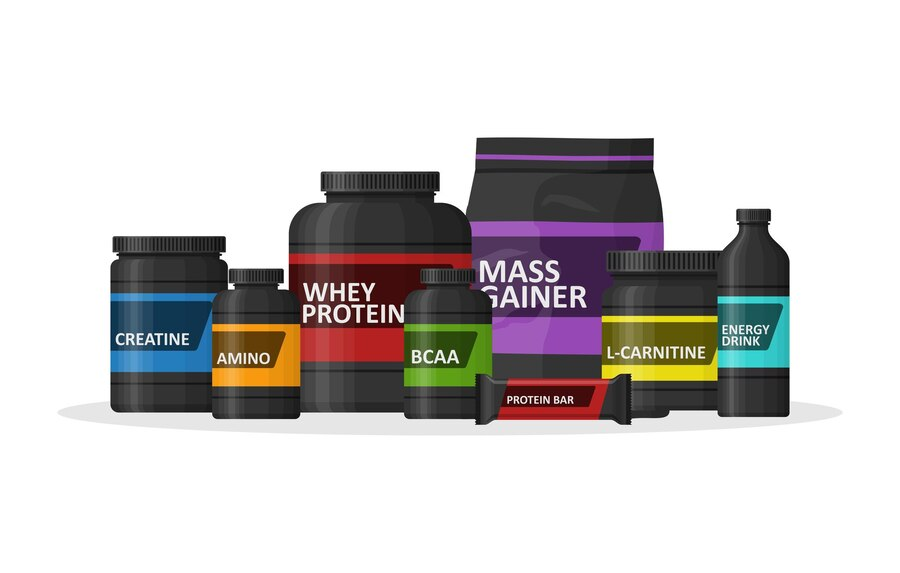
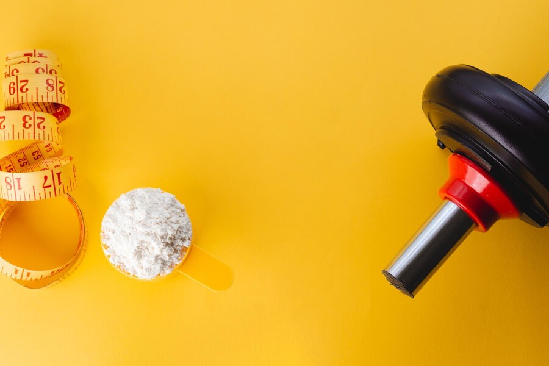
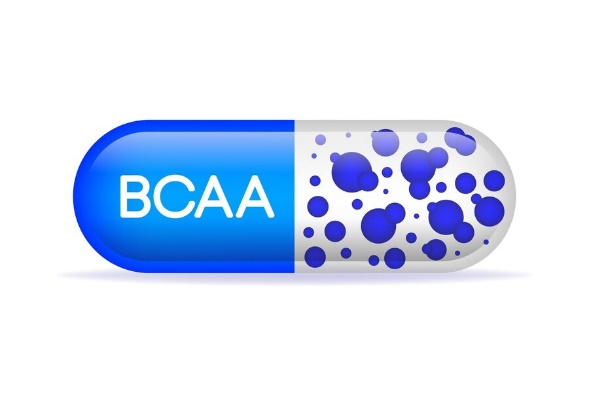
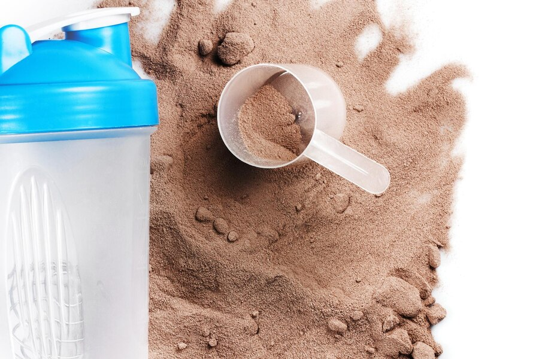

مکمل های بدنسازی
کراتین
مکمل کراتین قطعا پرمصرف ترین و همینطور جنجالی ترین مکملی است که مورد استفاده ی ورزشکاران قرار می گیرد. به طور ساده می توان گفت کراتین ترکیبی است که با بالابردن سطح تستسترون، به عضلات انرژی می دهد و در سطح سلولی باعث افزایش عملکرد و مقاومت بدن می شود. 95 درصد کراتین در ماهیچه ها و فقط 5 درصد آن در مغز، کبد و کلیه ذخیره می شود. لازم به ذکر است که کراتین به طور طبیعی در بدن ساخته می شود و در غذاهای با پروتئین بالا مانند گوشت قرمز و ماهی موجود است به طوری که در هر 400 گرم گوشت قرمز یا ماهی حدود 1 الی 3 گرم کراتین نهفته است. چند نمونه از مواد غذایی که تولید کراتین را تقویت می کنند عبارتند از: تخم مرغ- پیاز-ماهی سالمون- سیب زمینی شیرین- دانه های آفتابگردان- سیر- انبه- جگر گاو-هویج
عوارض جانبی کراتین
کراتین بیشترین تحقیقات آزمایشگاهی را در بین مکمل ها به خود اختصاص می دهد. در گذشته شایعات زیادی مبنی بر عوارض جبران ناپذیر کراتین بر بدن مانند ریزش مو، مشکلات کلیوی و ... وجود داشت ولی خوشبختانه امروزه با آزمایشات دقیقی که انجام گرفته، ثابت شده که مصرف مقدار مجاز کراتین در افراد سالم نه تنها هیچ گونه عوارضی ندارد،بلکه در درمان پارکینسون و دیابت نوع دو نیز بسیار موثر است. علاوه بر آن باعث تقویت حافظه و بهبود عملکرد مغز می شود. اگر فرد به طور ارثی مستعد ریزش مو یا دارای مشکلات کلیوی باشد، بهتر است با مشورت پزشک این مکمل را مصرف کند.
روش مصرف کراتین
به طور کلی دو روش برای مصرف کراتین وجود دارد.
الف) با بارگیری: به این صورت که به مدت 5 روز، هر روز 20 گرم کراتین(در 4 وعده ی 5 گرمی) و پس از گذشت این 5 روز، 5 گرم روزانه مصرف می شود.
ب) بدون بارگیری: از همان ابتدا روزی 5 گرم کراتین مصرف شود. در روش اول تجمع کراتین در چند روز اول باعث پیشرفت سریعتر ورزشکار می شود ولی تحقیقات نشان داده با توجه به این که پس از گذشت حدود 20 روز در هر دو روش سطح کراتین بدن به حداکثر می رسد، نیازی به بارگیری نیست و معمولا توصیه می شود از روش بدون بارگیری شخص میزان کراتین بدن خود را بالا ببرد.
* لازم به ذکر است 5 گرم گفته شده به صورت کلی می باشد و به طور دقیق بهتر است هرکس به میزان یک دهم وزن بدن خود روزانه کراتین مصرف کند( مثلا فرد 70 کیلوگرمی، روزانه 7 گرم تقسیم شده در دو وعده ی قبل و بعد تمرین) و تا مصرف روزانه تا 10 گرم کراتین در صورت مصرف آب زیاد، هیچ گونه مشکلی برای فرد ایجاد نمی کند.
نکات کراتین
تحقیقات جدید نشان داده که نیاز به دوره بندی در مصرف کراتین نیست و به شرط مصرف دوز مجاز، می توان پشت سرهم در کل سال از آن استفاده شود.
در صورت قطع مصرف مکمل کراتین، تا دو هفته سطح کراتین در عضلات بالا می ماند و سپس به تدریج کاهش می یابد. به طوری که اگر در مصرف دو ماهه، 2 یا 3 کیلوگرم افزایش حجم ایجاد شود، در نهایت نیم کیلوی آن باقی می ماند.
منابع
- یوتیوب: تمام واقعیت درباره کراتین
- یوتیوب: چگونه کراتین مصرف کنیم
- یوتیوب: دانستنی های مکمل کراتین، زمان مصرف و دوز مصرف
بی سی ای ای
بی سی ای ای که به آن بی سی دبل ای نیز می گویند، یکی دیگر از مکمل های پر طرفدار در بین ورزشکاران است. این مکمل از سه آمینواسید ضروری برای بدن یعنی لوسین، ایزولئسین و والین تشکیل شده است. به این دلیل به این سه آمینو اسید ضروری میگوییم چون بدن قادر به تولید آن نیست و باید حتما از منابع خارجی دریافت شود. این آمینو اسیدها برای ساخت عضله، چربی سوزی، افزایش قطر رگ ها، دم عضلانی بهتر و تعویق خستگی تا 10 درصد کاربرد دارند. در اصل اگر مولکول های پروتئین را به خانه ای تشبیه کنیم، خشت های آن همان آمینو اسید ها هستند. در ادامه توضیح داده خواهد شد که میتوان نیاز بدن به آمینو اسید را با موادغذایی تامین کرد ولی لازم به ذکر است به دلیل این که مکمل، تغلیظ شده ی غذاست، سرعت جذب آن 6 برابر بیشتر است .
روش مصرف bcaa
دوز مصرفی این مکمل بین 100 میلی گرم تا 300 میلی گرم روزانه بسته به میزان حرفه ای بودن شما متفاوت است. 100 میلی گرم* وزن به کیلوگرم :فرمول میزان مصرف یک فرد مبتدی مثلا دوز مصرفی برای یک فرد 80 کیلوگرمی مبتدی 8000 میلی گرم یا 8 گرم روزانه می باشد. درباره ی زمان مصرف این مکمل میتوان گفت در هر سه وعده ی قبل تمرین، حین تمرین و پس از تمرین مصرف می توان مصرف شود تا ساخت و تولید پروتئین را تقویت کند و از شکسته شدن پروتئین های عضله جلوگیری کند. Bcaa به شکل کپسول و یا پودرهای ساده و طعم دار در بازار عرضه می شود و باید به این نکته توجه داشت که پودر ساده ی آن کمی تلخ مزه است و شاید مورد پسند بعضی افراد نباشد. مصرف مواد غذایی حاوی ویتامین b6 یا قرص آن میتوان سرعت جذب این مکمل را بالا ببرد.
نکته ی مهم درباره ی bcaa
هر فرد به طور متوسط 2 گرم پروتئین به ازای هر کیلوگرم وزن بدن نیاز دارد که اگر این مقدار پروتئین توسط مواد غذایی روزمره فراهم شود، دیگر خوردن مکمل bcaa کاملا بی فایده است. به طور مثال در 200 گرم سینه ی مرغ، 10 گرم bcaa موجود است که تقریبا دو برابر یک سروینگ مکمل های بازار است پس اگر شما میزان پروتئین کافی را از طریق غذا به دست می آورید، دیگر نیازی نیست با خرید مکمل bcaa پول خود را هدر دهید چراکه مقدار اضافی آن کاملا دفع میشود.
منابع
- یوتیوب: این ۴ مکمل غذایی را نخرید
- یوتیوب: مکمل بی سی ای ای چرا مصرف کنیم؟ چگونه مصرف کنیم؟ چه زمانی مصرف کنیم؟ چقدر مصرف کنیم؟
- شرکت دارویی پوراطب گستر: بهترین زمان مصرف BCAA
گینر
یکی دیگر از مکمل هایی که موردعلاقه ی ورزشکاران به خصوص افراد با تیپ بدنی اکتومورف (لاغر اندام) واقع شده است، مکمل گینر است. این مکمل که با هدف افزایش حجم و وزن بیشتر مورد استفاده ی افراد مبتدی است، از کربوهیدرات، پروتئین و چربی تشکیل شده است. در بازار دو نوع MASS GAINER و WEIGHT GAINER وجود دارد که اولی برای افزایش وزن به واسطه ی افزایش حجم و توده ی عضلانی و دومی برای افزایش وزن به واسطه ی افزایش هضم و جذب غذا به کار می رود.
فواید گینر
1. عدم نیاز به خوردن تعداد زیادی وعده غذایی برای تأمین کالری موردنیاز
2. استفاده آسان برای اکتومورفها، هاردگینرها و افرادی با مشغله زیاد برای حفظ کالری مازاد روزانه
3. تأمین ۳۵۰ تا ۱۰۰۰ کالری در هر وعده مصرف
4. کمک به افزایش انسولین و شروع سنتز پروتئین برای ساخت و ریکاوری عضلات
5. کمک به افزایش ذخایر گلیکوژن جهت تمرینات سخت، کاهش خستگی عضلانی، و به حداکثر رساندن عضله بالقوه